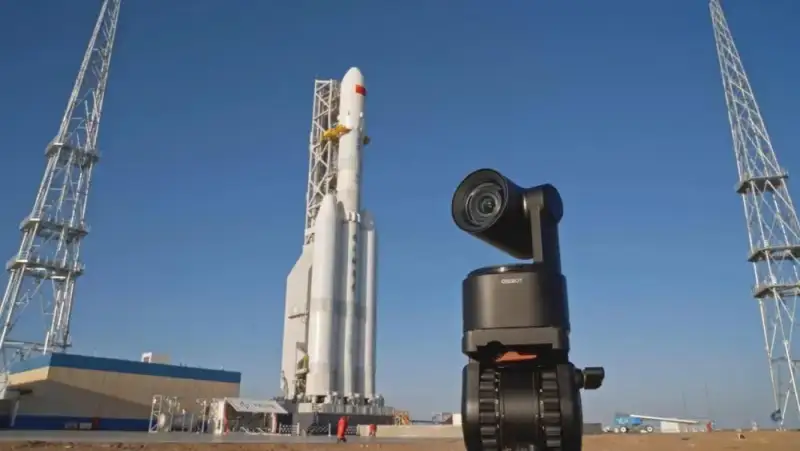
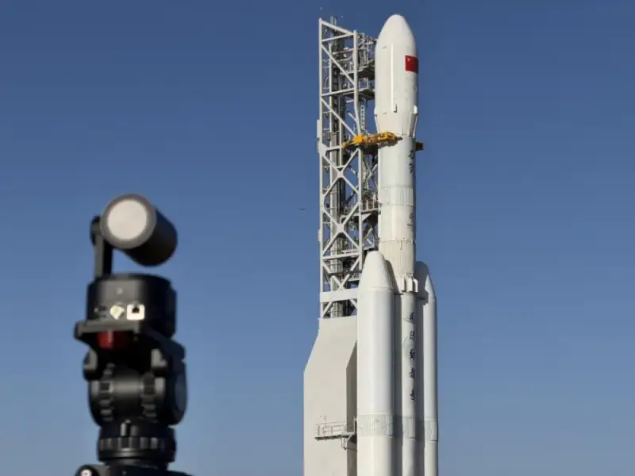
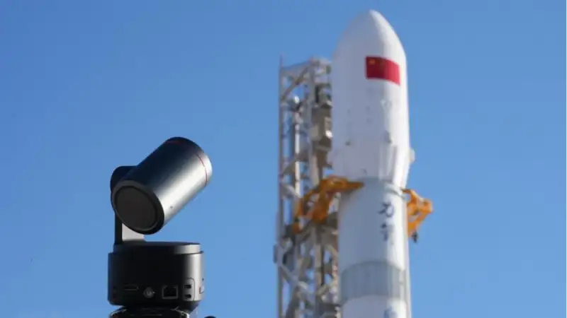

On April 24, 2026, the eleventh China Space Day arrived as scheduled. This year the day carries special weight: it marks the 70th anniversary of the Chinese space program and the tenth anniversary of China Space Day. The theme of this year event, Seven Decades Reaching for the Sky, Hand in Hand Exploring the Heavens, looks back on 70 eventful years and also sends a declaration to the deep universe.
Seven decades reaching for the sky: an epic of self-reliance
In 1956, the Chinese space program began under very hard conditions. From the first signal of the Dongfanghong-1 satellite cutting across the sky, to manned flight that carried Chinese steps into space. From the Chang’e lunar missions and Tianwen Mars exploration, to the completed Chinese space station with long-term crews. Generations of space workers opened the way through hardship, and with wisdom and sweat wrote a splendid chapter for China in the vast universe.
The numbers show the leap. The Long March rocket series took 37 years to reach its first hundred launches, less than 8 years for the second hundred, and just over 4 years for the third hundred. This growing speed comes from the workers refusal to give up and their steady, practical work. In 2025, China completed 92 launches in the year, a new record. From deep-space exploration to manned flight, major projects have delivered strong results, and China is moving from a large space nation to a strong one.
Behind these results is a space spirit woven into the bloodline. The spirit of the Two Bombs, One Satellite, the manned spaceflight spirit, the lunar exploration spirit, and the Beidou spirit of the new era. These valued parts of the Chinese spiritual heritage form a firm anchor of belief for its space workers. This spirit, which faces challenges and never gives up, has built the reliability of the Chinese space program and made the road to the sky ever wider.

Commercial space: new forces join the dream among the stars
In recent years, commercial space has become a fast-growing, lively part of China space map. More and more private forces have joined the march among the stars and brought new energy to the program. In 2025 alone, Chinese commercial space completed 50 launches, or 54 percent of the nation space launches that year, the first time commercial launches passed half. It put 311 commercial satellites into orbit, over 80 percent of the year satellites. Private firms such as Galactic Energy, CAS Space, LandSpace, i-Space, and Orienspace launched a combined 16 times in 2025, a record.
On March 30 this year, the Lijian-2 Y1 rocket, developed by CAS Space, lifted off at the Dongfeng Commercial Space Innovation Zone in Jiuquan, Gansu, and placed three satellites accurately into their planned orbits. As China first rocket with a common booster core design, the Lijian-2 uses a modular layout to combine heavy lift with low cost. Its successful first flight marks Chinese commercial space entering the era of heavy lift.
From the state team to private forces, and from major projects to commercial launches, the players in the Chinese space program grow more diverse, and innovation keeps bursting forth. This scene of exploring the heavens together is the echo of the space spirit in a new era. The work of exploring space belongs to the whole nation, and the journey to the stars needs more forces to join in.

Making history: a domestic AI camera tracks the rocket liftoff end to end
In the stunning moment the Lijian-2 rose, another innovation also deserves note. This time, a domestic AI imaging device was brought into the extreme setting of a rocket launch, and it successfully tracked and recorded the rocket from ignition to liftoff. The device that recorded this highlight was the OBSBOT Tail 2, from the domestic smart imaging brand OBSBOT.
The meaning of this breakthrough goes far beyond the footage itself. It shows that, driven by the booming space program, more Chinese tech firms are innovating together in their own fields, and using smart tools to record and witness major national projects. When a domestic AI camera and a domestic rocket record a first flight side by side, that is itself a vivid sign of China innovative forces moving together.

Reaching for the heavens: witnessing China upward drive
From the first satellite rising to the Long March rockets completing hundreds of launches, China opened the door to the vast universe. From Shenzhou-5 carrying its first astronaut, Yang Liwei, into space, which made China the third nation to master manned flight on its own, to today regular trips to the Tiangong station, China has realized a thousand-year dream of flying. From the Chang’e missions reaching the moon and making the first soft landing on the far side, to Tianwen-1 landing on Mars and leaving a Chinese mark on the red planet, Chinese footsteps have moved from near Earth to deep space. From the Beidou navigation system weaving a global network to serve the world, to the Chinese space station with its Tianhe core module and Wentian and Mengtian labs joined and crewed long term, China has its own home in space.
Over seventy years, China will to reach the heavens has not changed. On this road, the space spirit has always been a torch lighting the way, driving generation after generation of workers and drawing more social forces to join. As this year Space Day theme says: Seven Decades Reaching for the Sky, Hand in Hand Exploring the Heavens. As Chinese rockets reach for the sky, Chinese innovation moves toward the light at the same pace. Space exploration never ends, and the road to the dream never stops. On the journey to the deeper universe, China, with growing confidence, reaches for the heavens and witnesses and creates the upward drive of this age.
The space workers dream of the sea of stars, and OBSBOT dreams of recording every moment that moves the times forward. Their meeting is a coming together of Chinese strengths from different fields at the peak, and it is the deepest witness of domestic AI imaging to a rising China.